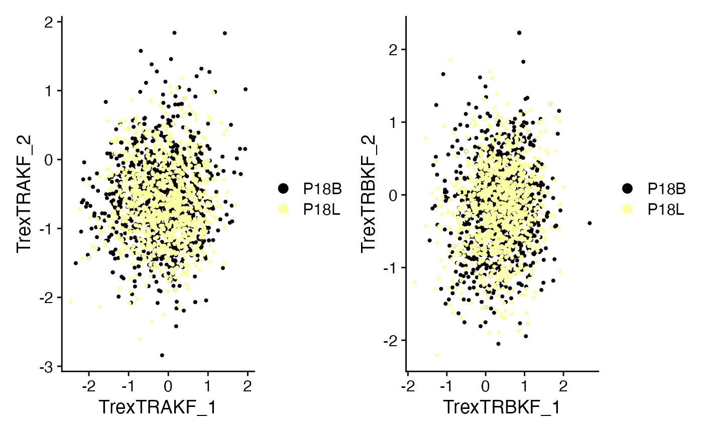

Trex_Trajectory.RmdMoving beyond the dual-embedding of TCR/RNA using Trex, the approach can also be used for performing trajectory analysis. Unlike using RNA alone, we can leverage using the clonal identity as part of the calculation. For this vignette, we will there are several packages that will be used:
Trex takes the CDR3 amino acid sequence and embeds them into latent dimensional space using convolutional neural networks. An introduction to Trex and the models available can be found in the scRepertoire website. Below we will use variational autoencoders (VAE) using the the Kidera factors.
SeuratObj <- subset(scRep_example, Patient == "P18")
SeuratObj <- runTrex(SeuratObj, chains = "TRA", encoder.model = "VAE", encoder.input = "KF", reduction.name = "Trex.TRA.KF")## [1] "Calculating the encoding values..."
SeuratObj <- runTrex(SeuratObj, chains = "TRB", encoder.model = "VAE", encoder.input = "KF", reduction.name = "Trex.TRB.KF")## [1] "Calculating the encoding values..."
plot1 <- DimPlot(SeuratObj, reduction = "Trex.TRA.KF", group.by = "orig.ident") + scale_color_viridis(option = "B",
discrete = TRUE) + theme(plot.title = element_blank())
plot2 <- DimPlot(SeuratObj, reduction = "Trex.TRB.KF", group.by = "orig.ident") + scale_color_viridis(option = "B",
discrete = TRUE) + theme(plot.title = element_blank())
plot1 + plot2
SeuratObj <- SeuratObj %>%
NormalizeData(verbose = FALSE) %>%
FindVariableFeatures(verbose = FALSE) %>%
quietTCRgenes() %>%
ScaleData(verbose = FALSE) %>%
RunPCA(verbose = FALSE)
rescaled.output <- rescaleByNeighbors(list(RNA = SeuratObj@reductions$pca@cell.embeddings, TRA = SeuratObj@reductions$Trex.TRA.KF@cell.embeddings,
TRB = SeuratObj@reductions$Trex.TRB.KF@cell.embeddings))